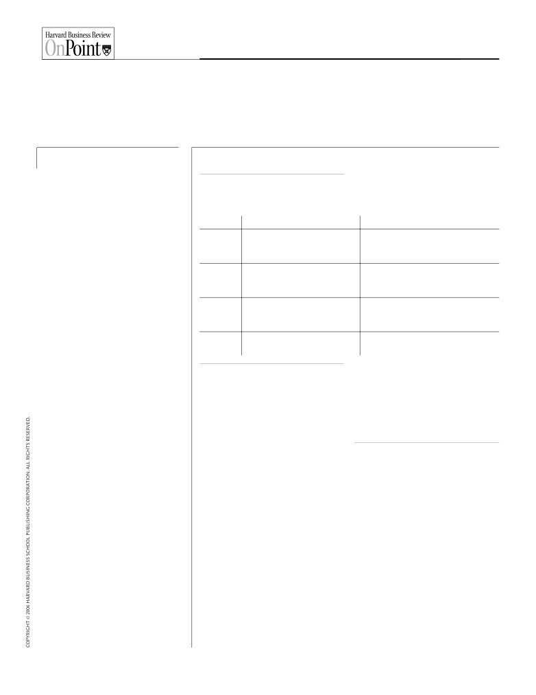
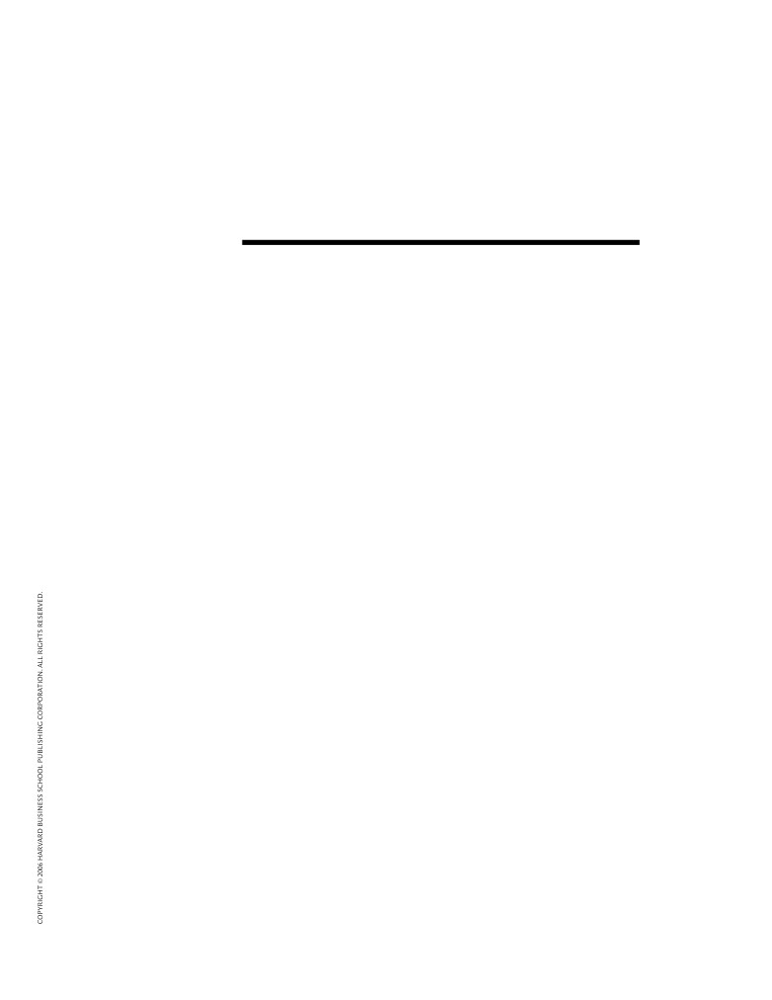
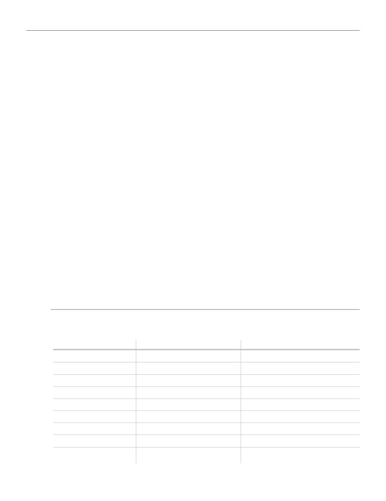
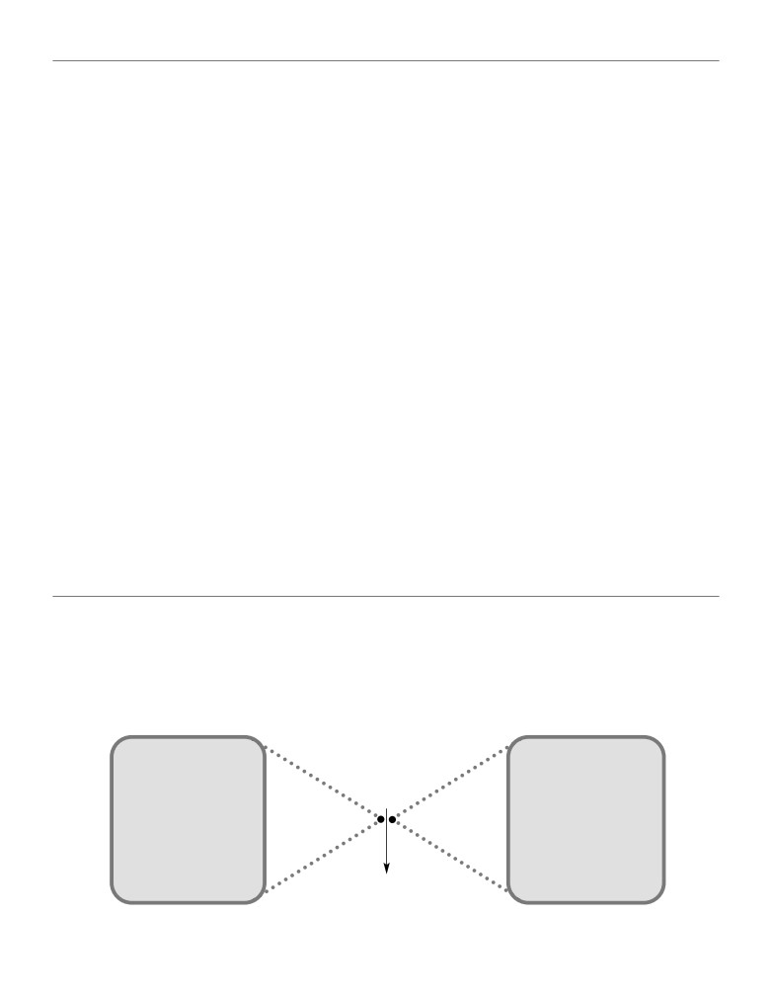

A R T I C L E
Eager Sellers and Stony
Buyers
Understanding the Psychology of New-Product
Adoption
by John T. Gourville
Included with this full-text Harvard Business Review article:
1 Article Summary
The Idea in Brief—the core idea
The Idea in Practice—putting the idea to work
3 Eager Sellers and Stony Buyers: Understanding the Psychology of
New-Product Adoption
11 Further Reading
A list of related materials, with annotations to guide further
exploration of the article’s ideas and applications
Product 4516

Eager Sellers and Stony Buyers
Understanding the Psychology of New-Product Adoption
The Idea in Brief
The Idea in Practice
Despite billions invested in innovation, 40%
To ensure that consumers adopt your innovations, Gourville recommends these strategies:
to 90% of new products fail. Consider TiVo’s
digital video recorder. Though it has gar-
GAUGE POTENTIAL CONSUMER RESISTANCE
nered rave reviews from industry experts
All new products require change. To gauge the degree of change required by your offering, decide
and users since the late 1990s, TiVo amassed
which category best fits your innovation:
$600 million in operating losses by 2005 be-
CATEGORY
DESCRIPTION
EXAMPLE
cause demand trailed expectations.
Easy Sells
Provide limited benefits to consumers and
Angled-head toothbrushes.
Why such failures? Consumers’ and compa-
innovators, and entail limited changes to
nies’ mental biases:
products and consumer behavior.
• Consumers, finding comfort in familiar-
Sure Failures
Offer few benefits and require signifi-
Dvorak keyboard: marginally increases typing
ity, irrationally overvalue the benefits of-
cant behavior change. Scant likelihood
speeds over QWERTY keyboard but requires
fered by products they’re already using.
of adoption.
tremendous behavior change.
And they loathe having to change their
Long Hauls
Provide technological leaps but require
XM Radio: uses orbiting satellites to provide
behavior to use an innovation—such as
major behavior change and lengthy
coast-to-coast reception but requires consumers
mastering new software to edit digital
adoption process.
to buy special equipment and pay for service.
photos. Consequently, they often reject
Smash Hits
Offer great benefits while requiring
Google: employs new search algorithm without
offerings that are objectively superior to
minimal behavior change.
changing familiar Web user interface.
those they’re using.
• Companies, knowing their innovation is
ers who might never drive more than 20
MINIMIZE CONSUMER RESISTANCE
better than what’s out there, overvalue
miles from the center of town. These people
the benefits it provides—wrongly as-
Use these strategies to limit the extent of be-
might value existing networks of gas stations
havior change required of consumers:
suming that consumers will leap at the
less than mainlanders do and appreciate
chance to buy.
emissions-free transportation more. Iceland
• Make behaviorally compatible products.
is using this strategy to spearhead develop-
Toyota’s Prius gives consumers a significant
Result? A gaping mismatch between what
ment of a fuel cell society.
increase in gas mileage, while enabling
innovators think consumers desire—and
them to retain all the benefits of the en-
what consumers really want.
MANAGE CONSUMER RESISTANCE
trenched alternative—gas-only vehicles.
How to get your new products adopted?
Many worthwhile innovations, in particular
• Target consumers who aren’t yet using
Gourville advocates anticipating—and
Long Hauls, require inescapable behavior
entrenched products. Burton Snowboards
managing—consumers’ resistance to the
change. Consider these approaches to man-
targets young winter-sports enthusiasts
changes your innovations will require. For
aging consumer resistance to such change:
who haven’t yet become seasoned skiers—
example, Toyota enhanced the appeal of its
and thus aren’t pooh-poohing snowboards.
• Brace for slow adoption. Accept that your
hybrid Prius by outfitting the vehicle with
Burton has grown the snowboarding indus-
Long Haul innovation may not catch on im-
internal-combustion and self-charging
try from virtually nothing in the 1970s to a
mediately. Avoid depleting your resources
electric engines—reducing required be-
point where snowboarders outnumber ski-
too quickly. For example, TiVo may be burn-
havioral changes. The resulting driving ex-
ers in the United States.
ing through its capital by trying to quickly
perience virtually matched that offered
market a product that’s a Long Haul innova-
by gas-only cars. The Prius became the
• Find believers. Identify consumers who
tion.
first alternative-fuel vehicle to win popular
prize the benefits they’ll gain from your in-
acceptance in the United States: consumers
novation or only lightly value those they’d
• Offer benefits at least 10 times greater
snapped up 100,000 of them in 2005 alone.
have to give up by switching to your offer-
than existing products’. For example, MRIs
ing. For example, makers of hydrogen-
offer such dramatic improvement over X-rays
powered fuel cell vehicles could target con-
that consumers accept the new behaviors
sumers for whom access to central refueling
(such as lying motionless for a long time in a
stations isn’t irksome—such as island dwell-
large tube) required to get an MRI.
page 1

Many innovations fail because consumers irrationally overvalue the
old and companies irrationally overvalue the new.
Eager Sellers and Stony
Buyers
Understanding the Psychology of New-Product
Adoption
by John T. Gourville
More than a century ago, Ralph Waldo Emer-
failed, meaning that approximately half the
son is reported to have said, “If a man can
companies that pioneered new product catego-
write a better book, preach a better sermon,
ries later pulled out of those businesses.
or make a better mousetrap than his neighbor,
Consider three high-profile innovations
though he build his house in the woods, the
whose performances have fallen far short
world will make a beaten path to his door.” If
of expectations:
only marketing innovations were that simple.
• Webvan spent more than $1 billion to cre-
In today’s hypercompetitive marketplace,
ate an online grocery business, only to declare
companies that successfully introduce new
bankruptcy in July 2001 after failing to attract as
products are more likely to flourish than those
many customers as it thought it would.
that don’t. Businesses spend billions of dollars
• In spite of gaining the support of Apple’s
making better “mousetraps” only to find con-
Steve Jobs, Amazon’s Jeff Bezos, and many high-
sumers roundly rejecting them. Studies show
profile investors, Segway sold a mere 6,000
that new products fail at the stunning rate of
scooters in the 18 months after its launch—a far
between 40% and 90%, depending on the cate-
cry from the 50,000 to 100,000 units projected.
gory, and the odds haven’t changed much in
• Although TiVo’s digital video recorder
the past 25 years. In the U.S. packaged goods
(DVR) has garnered rave reviews since the late
industry, for instance, companies introduce
1990s from both industry experts and product
30,000 products every year, but 70% to 90% of
adopters, the company had amassed $600 mil-
them don’t stay on store shelves for more than
lion in operating losses by 2005 because de-
12 months. Most innovative products—those
mand trailed expectations.
that create new product categories or revolu-
After the fact, experts and novices alike tend
tionize old ones—are also unsuccessful. Ac-
to dismiss unsuccessful innovations as bad
cording to one study, 47% of first movers have
ideas that were destined to fail. But surely
harvard business review • june 2006
page 3
Eager Sellers and Stony Buyers
that’s too simple an explanation. If these inno-
sumers, who irrationally overvalue existing
vations are so misguided, why isn’t it obvious
alternatives. The results are often disastrous:
before the fact? Webvan was backed by sea-
Consumers reject new products that would
soned retailers, executives, and investment
make them better off, while executives are at a
bankers, but it was nonetheless a spectacular
loss to anticipate failure. This double-edged
failure. While the Segway and TiVo stories
bias is the curse of innovation.
have yet to play out fully, both company execu-
tives and industry analysts were far more opti-
The Psychology of Gains and Losses
mistic about those innovations than they
Companies have long assumed that people
should have been.
will adopt new products that deliver more
Why do consumers fail to buy innovative
value or utility than existing ones. Thus, busi-
products even when they offer distinct im-
nesses need only to develop innovations that
provements over existing ones? Why do com-
are objectively superior to incumbent prod-
panies invariably have more faith in new prod-
ucts, and consumers will have sufficient incen-
ucts than is warranted? Few would question
tive to purchase them. In the 1960s, communi-
the objective advantages of many innovations
cations scholar Everett Rogers called the
over existing alternatives, but that’s often not
concept “relative advantage” and identified it
enough for them to succeed. To understand
as the most critical driver of new-product
why new products fail to live up to companies’
adoption. This argument assumes that compa-
expectations, we must delve into the psychol-
nies make unbiased assessments of innova-
ogy of behavior change. This article presents a
tions and of consumers’ likelihood of adopting
behavioral framework that explains why so
them. Although compelling, the theory has
many products fail and outlines some actions
one major flaw: It fails to capture the psycho-
that companies can take to improve their
logical biases that affect decision making.
chances of success.
Gains and losses. In 2002, psychologist Daniel
New products often require consumers to
Kahneman won the Nobel Prize in econom-
change their behavior. As companies know,
ics for a body of work that explores why and
those behavior changes entail costs. Consum-
when individuals deviate from rational eco-
ers incur transaction costs, such as the activa-
nomic behavior. One of the cornerstones of
tion fees they have to pay when they switch
that research, developed with psychologist
from one cellular service provider to another.
Amos Tversky, is how individuals value pros-
They also bear learning costs, such as when
pects, or choices, in the marketplace. Kahne-
they shift from manual to automatic automo-
man and Tversky showed, and others have
bile transmissions. People sustain obsoles-
confirmed, that human beings’ responses to
cence costs, too. For example, when they
the alternatives before them have four dis-
switch from VCRs to DVD players, their video-
tinct characteristics.
tape collections become useless. All of these
First, people evaluate the attractiveness of
are economic switching costs that most compa-
an alternative based not on its objective, or ac-
nies routinely anticipate.
tual, value but on its subjective, or perceived,
What businesses don’t take into account,
value. Second, consumers evaluate new prod-
however, are the psychological costs associated
ucts or investments relative to a reference
with behavior change. Many products fail be-
point, usually the products they already own
cause of a universal, but largely ignored, psy-
or consume. Third, people view any improve-
chological bias: People irrationally overvalue
ments relative to this reference point as gains
benefits they currently possess relative to those
and treat all shortcomings as losses.
they don’t. The bias leads consumers to value
Fourth, and most important, losses have a
the advantages of products they own more
far greater impact on people than similarly
than the benefits of new ones. It also leads ex-
sized gains, a phenomenon that Kahneman
ecutives to value the benefits of innovations
and Tversky called “loss aversion.” For instance,
John T. Gourville (jgourville@
they’ve developed over the advantages of in-
studies show that most people will not accept a
hbs.edu) is an associate professor of
cumbent products.
bet in which there is a 50% chance of winning
marketing at Harvard Business School
That leads to a clash in perspectives: Execu-
$100 and a 50% chance of losing $100. The
in Boston. He is the coauthor, with Dilip
tives, who irrationally overvalue their innova-
gains from the wager must outweigh the losses
Soman, of “Pricing and the Psychology of
tions, must predict the buying behavior of con-
by a factor of between two and three before
Consumption” (HBR September 2002).
page 4
harvard business review • june 2006
Eager Sellers and Stony Buyers
most people find such a bet attractive. Simi-
Richard Zeckhauser called the “status quo
larly, a survey of 1,500 customers of Pacific Gas
bias.” Knetsch asked one group of students to
and Electric revealed that consumers demand
choose between an attractive coffee mug and
three to four times more compensation to en-
a large bar of Swiss chocolate. He gave a sec-
dure a power outage—and suffer a loss—than
ond group of students the coffee mugs but a
they are willing to pay to avoid the problem, a
short time later allowed each student to ex-
potential gain. As Kahneman and Tversky
change his or her mug for a chocolate bar. Fi-
wrote, “losses loom larger than gains.”
nally, Knetsch gave chocolate bars to a third
The endowment effect. Loss aversion leads
group of students but much later allowed each
people to value products that they already
student to exchange his or her bar for a mug.
possess—those that are part of their endow-
Of the students given a choice at the outset,
ment—more than those they don’t have. Ac-
56% chose the mug, and 44% chose the choco-
cording to behavioral economist Richard Thaler,
late bar, indicating a near even split in prefer-
consumers value what they own, but may have
ences between the two products. Logically,
to give up, much more than they value what
therefore, about half of the students to whom
they don’t own but could obtain. Thaler called
Knetsch gave the coffee mug should have
that bias the “endowment effect.”
traded for the chocolate bar and vice versa.
In a 1990 paper, Thaler and his colleagues
That didn’t happen. Only 11% of the students
describe a series of experiments they con-
who had been given the mugs and 10% of
ducted to measure the magnitude of the en-
those who had been given the chocolate bars
dowment effect. In one such experiment, they
wanted to exchange their products. To approx-
gave coffee mugs to a group of people, the Sell-
imately 90% of the students, giving up what
ers, and asked at what price point—from 25
they already had seemed like a painful loss
cents to $9.25—the Sellers would be willing to
and shrank their desire to trade.
part with those mugs. They asked another
Other experiments have demonstrated the
group—the Choosers—to whom they didn’t
existence of the status quo bias in people’s
give coffee mugs, to indicate whether they
choices relating to investments, automobiles,
would choose the mug or the money at each
and jobs. Those experiments also reveal that
price point. In objective terms, all the Sellers
the status quo bias intensifies over time. While
and Choosers were in the same situation: They
Thaler and his colleagues estimated the extent
were choosing between a mug and a sum of
of loss aversion to be approximately a factor of
money. In one trial of this experiment, the Sell-
two when students had owned the coffee mugs
ers priced the mug at $7.12, on average, but the
for a short while, other researchers have found
Choosers were willing to pay only $3.12. In an-
that the magnitude of the bias rises, over time,
other trial, the Sellers and the Choosers valued
to a factor of approximately four.
the mug at $7.00 and $3.50, respectively. Over-
Interestingly, most people seem oblivious to
all, the Sellers always demanded at least twice
the existence of the behaviors implicit in the
as much to give up the mugs as the Choosers
endowment effect and the status quo bias. In
would pay to obtain them.
study after study, when researchers presented
Similar experiments with goods as diverse as
people with evidence that they had irrationally
lottery tickets, hunting licenses, and fine wines
overvalued the status quo, they were shocked,
have shown that people demand two to four
skeptical, and more than a bit defensive. These
times more compensation to give up products
behavioral tendencies are universal, but aware-
that they already possess than they are willing
ness of them is not.
to pay to obtain these items in the first place.
This shows that people irrationally overvalue
Building a Behavioral Framework
goods in their possession over those they don’t
By applying the endowment effect and the
have by a factor that is very close to three.
status quo bias, I have built a behavioral
Status quo bias. Kahneman and Tversky’s
framework around the three entities that
research also explains why people tend to stick
drive the market potential of any innovation:
with what they have even if a better alterna-
the new product or technology itself, the con-
tive exists. In a 1989 paper, economist Jack
sumer who must adopt it, and the company
Knetsch provided a compelling demonstration
that designs it.
of what economists William Samuelson and
Innovations and behavior change. The suc-
harvard business review • june 2006
page 5

Eager Sellers and Stony Buyers
cessful adoption of an innovation often in-
bines, and scrolling through e-books will have
volves trade-offs. While consumers may obtain
a far greater psychological impact than will
highly desirable new features by buying an in-
the gains from using them. As pointed out ear-
novation, they often must give up some of the
lier, consumers overvalue losses by a factor of
benefits of the incumbent product. Consum-
roughly three. Therefore, it’s not enough for a
ers rarely view these trade-offs as simple be-
new product simply to be better. Unless the
havior changes; they see them as gains and
gains far outweigh the losses, consumers will
losses. Provide a consumer with a new benefit,
not adopt it.
and she will see it as a gain. Take away a bene-
For example, the benchmark most consum-
fit, and she will see it as a loss. If she buys a
ers would have used to assess Webvan’s attrac-
Segway, for instance, she can run errands more
tiveness would have been the physical shop-
quickly, but she will sacrifice the health bene-
ping trip. By signing up for Webvan, a
fits of a brisk walk. Conversely, reduce a cur-
consumer no longer had to drive to the store,
rent cost, and people will perceive it as a gain;
walk through the aisles, physically place his
impose a new cost, and it will be treated as a
purchases in a cart, stand in the checkout line,
loss. TiVo DVRs, for example, allow people to
lug the groceries to the car, and drive home.
eliminate the expense of buying videotapes,
To obtain these gains, however, a shopper had
but they must put up with the clutter of yet
to give up some benefits inherent in a shop-
another electronic device. As the exhibit “The
ping trip. No longer could he cherry-pick the
Trade-offs Innovations Demand” shows, most
best cuts of meat, gain inspiration for dinner
innovative products suffer from a gain-versus-
by seeing what looked good, or be reminded
loss syndrome.
by a display that he needed ketchup. Most
Consumers and behavior change. Consum-
consumers would have viewed giving up
ers view products they own or use regularly as
those benefits as losses and, since they over-
part of their endowment. As a result, they as-
weight losses relative to gains, would have
sess innovations in terms of what they gain
found Webvan less attractive than the status
and lose relative to those existing products. A
quo. Was the overweighting of losses the only
lifetime of driving gasoline-powered cars,
reason Webvan failed to gain traction in the
heating homes with oil, and reading paper-
marketplace? No. Was it a factor? Almost cer-
back novels has led people to treat those famil-
tainly. George Shaheen, Webvan’s former
iar options as the status quo. As a result, the
CEO, once stated, “There weren’t enough
losses consumers will incur in switching to
loyal customers for repeat shopping, and the
electric cars, obtaining power from wind tur-
reason is a huge behavioral science problem.”
THE TRADE-OFFS INNOVATIONS DEMAND
Innovation
What Consumers Gain by Buying
What Consumers Lose by Buying
Electric cars
Clean environment
Easy refuelin g
Digital video recorders
Easy recording
Ability to play rented movies
DVD rentals by mail
Broad selection
Spontaneity
E-books
Easy portability
Durability
Online grocery shopping
Home delivery
Ability to select freshest products
Satellite radio
Broad selection
Free music
Screw-top wine caps
Less spoilage
Elegance of the experience
Segway scooter
Mobility
Health benefits of walkin g
Wind turbines
Nonpolluting energy
Unobstructed view s
page 6
harvard business review • june 2006

Eager Sellers and Stony Buyers
He was right in more ways than he knew.
utives are also unaware of their bias. Studies
Companies and behavior change. In a per-
show that when anticipating others’ judg-
fect world, companies would know that con-
ments or choices, people find it impossible to
sumers irrationally overvalue incumbent
ignore what they themselves already know or
products and would take that bias into ac-
believe to be true. Therefore, we overestimate
count when launching innovations. But execu-
the probability that others will solve a puzzle if
tives are also biased—in favor of new prod-
we know the answer, we overestimate the like-
ucts. Having worked on a new product for
lihood that others will find a hidden item if we
months, if not years, developers operate in a
know its location, and we expect others to be
world where their innovation is the reference
better at predicting a company’s earnings if we
point. They’re convinced that the product
know that number. Due to the “curse of knowl-
works, they recognize the need for it, and they
edge,” as behavioral scientists call it, developers
are keenly aware of the shortcomings of exist-
expect consumers to see the same value in
ing alternatives. Not having the features that
their innovations that they see. As a result, in-
their innovation provides seems to the devel-
stead of anticipating difficult sells, managers
opers like a shortcoming, and having the fea-
are shocked when sales don’t materialize.
tures that the incumbent provides doesn’t
To sum up, consumers overvalue the existing
seem essential. For instance, Webvan’s execu-
benefits of an entrenched product by a factor
tives almost certainly came to view online gro-
of three, while developers overvalue the new
cery shopping as the standard, and Segway’s
benefits of their innovation by a factor of
engineers envisioned their personal transpor-
three. The result is a mismatch of nine to one,
tation device as the status quo. Companies call
or 9x, between what innovators think consum-
those executives visionaries, product champi-
ers desire and what consumers really want.
ons, or believers, suggesting that they have
(See the exhibit “The
9x Effect.”) Left un-
embraced a world the rest of us haven’t—yet.
checked, this mismatch is a recipe for disaster.
Several problems arise when executives’ refer-
ence points shift, and they adopt the innovation-
Balancing Product and Behavior
as-status-quo perspective. They fall victim to
Changes
the endowment effect just as consumers do.
Against this rather bleak backdrop, what can
They overvalue the benefits of their innova-
companies do to ensure that consumers will
tions by a factor of three. Like consumers, exec-
adopt new products? The first step is for them
The 9x Effect
There’s a fundamental problem for compa-
on their products and see them as essential,
match of nine to one between what innova-
nies that want consumers to embrace inno-
consumers are reluctant to part with what
tors believe consumers want and what con-
vations: While developers are already sold
they have. This conflict results in a mis-
sumers truly desire.
CONSUMERS
COMPANIES
ARE USUALLY
ARE OFTEN
> skeptical about a new
> convinced the
product’s performance,
Consumers
Companies
innovation works,
3 × 3
overweight
overweight the
> unable to see the need for it,
> likely to see a need
the incumbent
new product’s
for the product,
> satisfied with the existing
product’s benefits
benefits by
product, and
by a factor
a factor of
> dissatisfied with the existing
of three.
three.
substitute, and
> quick to see what they
already own as the
> set on viewing the innovation
status quo.
as the benchmark.
9×
harvard business review • june 2006
page 7
Eager Sellers and Stony Buyers
to ask what kind of change they are demand-
matrix. (See the exhibit “Capturing Value from
ing of consumers.
Innovations.”) Companies must identify where
Innovations create value for consumers
their innovations fall in the matrix because
through product changes. While the internal
each cell has different implications for the like-
combustion engine converts gasoline to en-
lihood that consumers will adopt those prod-
ergy, a fuel cell converts hydrogen to energy,
ucts as well as the time acceptance might take.
virtually eliminating pollutants in the process.
Easy sells. The most common new products
While film cameras capture analog images, dig-
are those that entail limited changes and re-
ital cameras capture ones and zeroes, making it
quire limited adjustments in behavior, as in
easier for consumers to edit photos. While FM
the case of toothbrushes with angled heads,
radio uses transmission towers, satellite radio
detergents with improved whiteners, and
uses orbiting satellites, resulting in coast-to-
cookies with organic ingredients. Consumer
coast reception. The greater the product
acceptance of such products may be quite
change, the greater the potential for a break-
high, but the benefits to both consumers and
through. However, as we’re aware, most inno-
companies are limited.
vations also demand behavior change from
Sure failures. Companies should avoid de-
consumers. People must change how they re-
veloping products that involve limited change
fuel cars, how they develop pictures, and how
and offer few benefits but require significant
they listen to the radio. The bigger the behav-
behavior change. The Dvorak keyboard,
ior change, the bigger the resistance from con-
which marginally increases typing speeds over
sumers is likely to be.
the QWERTY keyboard but entails tremen-
Comparing product and behavior change
dous behavior change, falls in this cell.
yields a certain tension: Companies create
Long hauls. Many new products offer tech-
value through product change, but they cap-
nological leaps, creating great value. However,
ture that value best by minimizing behavior
they also require significant behavior change.
change. That results in a simple but powerful
As the developers of satellite radio have found,
the road to adoption is slow and difficult with
such products because consumer resistance is
high. The silver lining is that many products
Capturing Value from Innovations
we now take for granted, such as the cellular
telephone and the Linux operating system, fell
The more companies change how prod-
most easily by minimizing the need for
into this category when they were introduced.
ucts work, the more behavior change
consumers to change. As the chart
Smash hits. Some innovations offer great
they demand from consumers. While
shows, that dynamic leads to four types
benefits but require minimal behavior change.
companies can create value through
of innovations.
These products stand the best chance of both
product changes, they can capture it
short-term and long-term success. In 2000,
who would have thought that the world
needed yet another search engine? By using a
LOW
new search algorithm without changing a fa-
EASY
SMASH
miliar user interface, however, Google suc-
SELLS
HITS
ceeded in rapidly attracting users.
Limited product
Significant
changes and
product changes,
Once companies understand the nature
behavior changes
limited behavior
and extent of the changes their innovations
changes
embody, they can accept and manage, or
Degree of
proactively minimize, the underlying resis-
behavior
change
SURE
LONG
tance to change.
required
FAILURES
HAULS
Limited product
Significant
Accepting Resistance
changes,
product and
For many innovations, significant behavior
significant
behavior
change is a given. The telephone changed how
behavior changes
changes
we interact with others, the automobile trans-
HIGH
formed the way we deal with distances, and
LOW
HIGH
the PC revolutionized the way we work. In
Degree of product change involved
such cases, companies can do several things to
page 8
harvard business review • june 2006
Eager Sellers and Stony Buyers
manage consumer resistance.
able consumer resistance, a company can
Be patient. The simplest strategy for deal-
eliminate incumbent products. In few cases
ing with consumer resistance is to brace for
would the logic be more compelling than in
slow adoption. Management consultant Geof-
the United States Mint’s handling of the dol-
frey Moore’s recommendations about how to
lar coin. In its latest attempt to replace the
“cross the chasm” and sell products to the
dollar bill, the U.S. Mint recently announced
pragmatic consumer applies in this context. To
that starting in 2007, it would issue dollar
be successful, companies must anticipate a
coins bearing the portraits of past U.S. presi-
long, drawn-out adoption process and manage
dents. It wants to replace bills with coins be-
it accordingly.
cause a bill lasts for only 18 months, while a
When companies wrongly assume that the
coin has a 30-year life span. The Mint’s deci-
adoption of new products will be rapid, they
sion may excite coin collectors, but it’s un-
run the risk of depleting their resources too
likely that the new dollar coins will be much
quickly. Compare the fate of the TiVo DVR
more successful than the Susan B. Anthony
with that of the DVD player, both of which en-
coin of the late 1970s or the Sacagawea dollar
tered the market in the late 1990s. By the end
coin of the past six years. That’s because, as in
of 2005, U.S. consumers had purchased more
the past, the Mint doesn’t plan to withdraw
than 80 million DVD players and bought only
the dollar bill from circulation. To appreciate
4 million TiVo units. That’s surprising, because
how things could be different, look north. In
while both devices are innovative, the incre-
1987, the Royal Canadian Mint introduced a
mental value of a DVD player is far less than
gold-colored dollar coin, the loonie, and nine
that of a TiVo DVR. A DVD player performs
years later, it launched a two-dollar coin, the
many of the same functions that a VCR does—
toonie. Both coins are widely used units of
primarily, playing rented movies. However, a
currency in Canada today. The reason is sim-
The losses consumers will
TiVo unit does things well that a VCR does
ple: The Canadian government removed one-
poorly, such as record TV shows, or things a
dollar and two-dollar bills from circulation
incur in switching to
VCR can’t do at all, such as pause live TV. Yet,
after it introduced the new coins.
electric cars, obtaining
given consumers’ comfort with devices that
Most companies don’t have the option of
play movies and use CD-like discs, the DVD
eliminating rivals. However, in some cases,
power from wind
player fits seamlessly into everyday behavior.
regulatory agencies can play a facilitating
turbines, and scrolling
TiVo, which pauses live TV and records shows
role. In the automobile industry, for instance,
that it thinks consumers will like, doesn’t. A
groups such as the California Air Resources
through e-books will
small amount of behavior change is required
Board and the United States Environmental
to adopt DVD players, while significant change
Protection Agency can foster the adoption of
have a far greater
is required to adopt TiVo. Thus, TiVo may be
innovative vehicles by restricting or taxing
psychological impact
burning through its capital by trying to quickly
the sale of gasoline-powered cars. Similarly,
build and sell a product that is actually a long-
HMOs and Medicare can encourage the adop-
than will the gains from
haul innovation.
tion of certain drugs and medical procedures
using them.
Strive for 10x improvement. Another ap-
through their reimbursement powers. Those
proach to managing customer resistance is for
agencies may not be able to eliminate the old
companies to make the relative benefits of
directly, but their actions can often have that
their innovations so great that they overcome
effect.
the consumer’s overweighting of potential
losses. Intel’s Andy Grove claims that to trans-
Minimizing Resistance
form an industry rapidly, an innovation must
For many companies, the long-haul option is
offer benefits that are 10x, or ten times better,
unattractive, innovations that offer 10x im-
than what existing alternatives can provide.
provements are rare, and eliminating the old is
The best examples come from the world of
impossible. These companies must minimize
medicine, where MRIs offer a 10x improve-
consumer resistance.
ment over X-rays, angioplasties offer a 10x im-
Make behaviorally compatible products.
provement over bypass surgeries, and psychi-
Companies can reduce or eliminate the behav-
atric drugs offer a
10x improvement over
ior change that innovations require and
frontal lobotomies.
thereby create smash hits. Toyota embraced
Eliminate the old. When facing unavoid-
this tactic with its hybrid electric vehicles, like
harvard business review • june 2006
page 9
Eager Sellers and Stony Buyers
the Prius. The Prius provides drivers with both
of skiers. Not surprisingly, the privately held
It’s not enough for
the traditional internal-combustion engine
company is the world’s leading snowboard
a new product simply
and an innovative, self-charging electric en-
maker, with a 40% share of the global market.
gine. The result is a driving experience that is
Find believers. Another option is for a com-
to be better. Unless the
virtually identical to that of a gasoline-only
pany to seek out consumers who prize the
gains far outweigh
car. Consumers obtain a significant increase in
benefits they could gain from a new product
gas mileage, yet they retain all the benefits of
or only lightly value those they would have to
the losses, consumers
the entrenched alternative. As a result, Toy-
give up. In the case of hydrogen-powered fuel
will not adopt it.
ota’s Prius is the first alternative-fuel vehicle to
cell vehicles, for instance, businesses must tar-
gain popular acceptance in the United States,
get environmentally conscious consumers.
with consumers buying more than 100,000 of
Less obviously, they can also target consumers
them in 2005.
for whom access to central refueling stations
The idea of minimizing behavior change has
isn’t a problem. Consider an island like Ber-
not been lost on Toyota’s rivals. In January
muda or Nantucket, where a car owner might
2005, for instance, BMW announced that it
not ever drive more than 20 miles from town.
was developing a hydrogen-based fuel cell ve-
In such places, consumers might value a net-
hicle that would also have a small gasoline en-
work of gas stations less and value emissions-
gine. If the vehicle runs out of hydrogen, the
free transportation more than consumers on
driver can switch to the conventional engine.
the mainland would. For that reason, the
The automobile will have all the benefits of a
small island nation of Iceland is at the fore-
cleaner-burning fuel without the need to alter
front of developing a fuel cell society. In 2003,
driving behaviors due to a lack of nearby
Reykjavik, the capital, became home to the
hydrogen-refueling stations. BMW, it appears,
world’s first commercial hydrogen filling sta-
also understands the importance of minimiz-
tion, and hydrogen-powered buses now travel
ing behavior change.
its streets.
Seek out the unendowed. A company can
• • •
also seek out consumers who are not yet users
All too often, consumers fail to buy products
of incumbent products. Over the past two de-
that companies expect them to adopt. The
cades, Burton Snowboards, based in Burling-
reason may lie less in the economic value of
ton, Vermont, has done just that. The com-
physical products and more in the minds of
pany, which makes snowboards, boots,
people. Until businesses understand, antici-
clothing, and other winter weather-related
pate, and respond to the psychological biases
equipment, targets young winter sports en-
that both consumers and executives bring to
thusiasts who haven’t yet established them-
decision making, new products will continue
selves as skiers. Through a countercultural
to fail.
marketing effort, the company has captured
the imagination of this demographic. Burton’s
Reprint R0606F
efforts have helped grow the snowboarding in-
Harvard Business Review OnPoint 4516
dustry from virtually nothing in the 1970s to a
To order, see the next page
point where the number of snowboarders in
or call 800-988-0886 or 617-783-7500
the United States now surpasses the number
page 10
harvard business review • june 2006
Eager Sellers and Stony Buyers
Understanding the Psychology of New-Product Adoption
Further Reading
COLLECTION
ARTICLE
Make Sure All Your Products Are
The New Rules for Bringing Innovations
Profitable, 2nd Edition
to Market
by Clayton M. Christensen, Scott Cook,
by Bhaskar Chakravorti
Taddy Hall, John A. Quelch, David Kenny,
Harvard Business Review
Mark Gottfredson, Keith Aspinall,
March 2004
Roland T. Rust, Debora Viana Thompson,
Product no. 6247
and Rebecca W. Hamilton
Here’s yet another reason that consumers may
Harvard Business Review
resist adopting a product: other players must
February 2006
also simultaneously adopt it in order for the
Product no. 3447
innovation to deliver benefits. For example, a
Customers spurn new products for numerous
bank won’t try a faster transaction-processing
reasons, including the widespread preference
system unless other banks with whom it com-
for the familiar noted by Gourville. The four ar-
municates also adopt the system. Chakravorti
ticles in this collection present a range of
offers strategies for convincing all potential
strategies for addressing these additional
customers that they would benefit from em-
reasons—so your offerings not only win con-
bracing your product. For example: 1) Position
sumers’ acceptance but also generate a profit
your innovation as complementary to influen-
for your firm. Examples include: 1) Instead of
tial players’ offerings. Palm positioned its Palm
developing products to suit the “needs” of sta-
Pilot as a complement to, not substitute for,
tistically average customers, ask real people
computers. 2) Design easily adaptable prod-
what “jobs” they want to get done. Then de-
uct and marketing plans. Microsoft follows
velop offerings they’ll want to “hire” for those
other players’ innovations; for instance, its
jobs. 2) Instead of offering feature-heavy prod-
Windows operating system capitalized on the
ucts that try to do it all, provide a variety of
success of Apple’s Macintosh interface. 3) Co-
simpler products—each tailored to a particu-
ordinate switching incentives. By making Ac-
lar customer segment. 3) To ensure your offer-
robat’s code available to software developers,
ing’s profitability, gauge each potential inno-
software manufacturer Adobe encouraged
vation’s impact on revenues and costs—
them to design valuable features, which made
introducing variety only if the costs of doing
the product more attractive to content cre-
so won’t outweigh the new revenues.
ators and readers.
To Order
For reprints, Harvard Business Review
OnPoint orders, and subscriptions
to Harvard Business Review:
Call 800-988-0886 or 617-783-7500.
For customized and quantity orders
of reprints and Harvard Business
Review OnPoint products:
Call Rich Gravelin at
617-783-7626,
or e-mail him at
rgravelin@hbsp.harvard.edu
page 11
U.S. and Canada
800-988-0886
617-783-7500
617-783-7555 fax